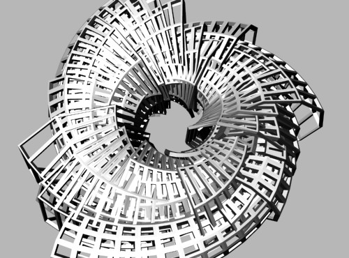

New Ribform 3D prints
May 17, 2012
New resin 3D prints from my Ribform series, done with Shapeways for their show at Model Citizens during ICFF in New York this weekend. Thanks to Duann Scott for the invitation to show and working out the fabrication!
I’m printing another Ribform permutation for the NYCCT Intersections symposium, this time with a Zcorp gypsum printer. It’ll be interesting to see how they compare.

- 3D Printing
- marius watz
- object
- shapeways
- work